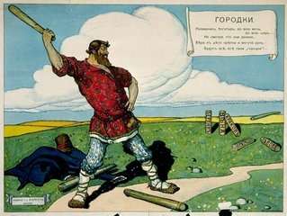
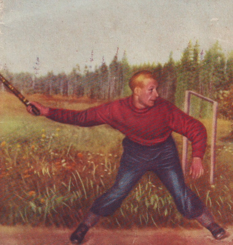

Происхождение игры:
легенды и исторические факты
Широко распространено мнение, что игра в городки «пришла к нам из глубины веков» и что «возникновение городков относится к далекому прошлому» , к «глубокой древности» . Мнение это попало
в энциклопедические издания. «Первые упоминания о городках относятся к Древней Руси», — читаем в выходящей ныне Большой Российской энциклопедии . Часто говорится о подлинно
национальном характере этой игры, потому что в нее играли как простой народ, так и цари и правители. Утверждается, что в городки играл Петр Великий. То же самое рассказывается о
генералиссимусе А. В. Суворове и об адмирале Ф. Ф. Ушакове. Не смотря на то, что некоторые писатели, публикующие исторические романы, с уверенностью приписывают пристрастие к городкам
Петру I, Суворову и другим великим личностям XVIII века, действительных исторических документов, подтверждающих это, пока не найдено. Более того, у известного И. Е. Забелина в подробном
перечне игр и забав, которыми увлекались русские цари, начиная с Михаила Федоровича и кончая Петром Великим, не упоминаются ни игра в городки (рюхи), ни русская лапта . Хотя неоднократно
говорится об играх в свайку, в карты, в шахматы и в тавлеи. И. Е. Забелин подчеркивает, что в до-Петровской России игры и забавы русских царей практически ничем не отличались от игр и
забав, распространенных в простонародье. То есть приведенный И. Е. Забелиным материал можно отнести не только к царским лицам, но и ко всему населению России.

В историческом романе «Князь Серебряный» А. Н. Толстой пишет, что в городки с удовольствием играли русские бояре времен Ивана Грозного. «Как, бывало, начнут ребята в городки играть, беда
той стороне, что супротив тебя! — хвалится в романе воевода Морозов. — Разлетишься, словно сокол ясный, да как расходится в тебе кровь молодая…» (гл. 6). А. Н. Толстой писал роман в то
время, когда игра в городки была распространена повсеместно, и неосознанно перенес ее во времена Ивана Грозного. Подобного рода анахронизм встречается не только в исторической
беллетристике, но и в полнее научных изданиях. Также и в собрании русских былин А. Д. Григорьева (1899–1901 гг.) умело играющим в городки-рюхи изображается легендарный богатырь Добрыня Никитич:
А заходил он гулять на дворы на барские
А на барские дворы да фсё на князевьские,
А играл он з детьми да князенецькима,
А со тема же с рыбятами со барскима.
А играл он с им(а) да нонь во рюхи нонь, —
А да избил где он их да фсех измуцил нонь.
Красивая былина, но, увы, исторически недостоверная. Во времена Киевской Руси, разумеется, бытовало множество забав, которые можно отнести к разряду подвижных спортивных состязаний.
Некоторые из них упоминаются в старинных летописях. Но в Повести временных лет и других летописях не встречается упоминаний о какой-либо народной игре, подобной городкам (а также рюхам или
чушкам, — ее другим названиям). Не фигурируют городки (как и лапта) в обширнейшем собрании русских народных картинок Д. А. Ровинского (1881 г.). Не отметили существование этой игры и
крупнейшие российские историки Н. И. Костомаров, В. О. Ключевский, С. М. Соловьев и другие. Да, русские издревле играли в свайку, в бабки, в карты, в тавлеи… Очень популярна были
шахматы и шашки . Но когда появились городки?
Говоря о происхождении игры в городки, нужно рассмотреть, какими мы располагаем на этот счет историческими документами. Самые ранние из них относятся к началу XIX века. Это цветные
гравюры, содержащиеся в различных западноевропейских изданиях и сопровождаемые кратким описанием.

В 1803–04 гг. в Лондоне художники Д.-А. Аткинсон и Дж. Уолкер (Atkinson J.-A., Walker J.) издают трехтомный альбом «Живописное представление манер, обычаев и развлечений русских», где представлена серия раскрашенных гравюр. Все они сделаны по рисункам Д.-А.. Аткинсона, совершившего длительное путешествия по России на рубеже XVIII–XIX вв. и воочию наблюдавшего народную жизнь. Некоторые гравюры представляют дворовые забавы, в том числе игру в городки (рюхи). Д.-А. Аткинсон называет ее «кеглями» (stittles) и дает такое пояснение: «Хотя эта игра — не совсем то же, что и кегли, но, тем не менее, походит на них больше, чем какая-либо другая, мне известная. Играющие в нее берут множество коротких дубинок приблизительно два с половиной фута длиной и толщиной обычной скалки; их складывают вместе и бросают в них подобную же дубину. Искусство игры состоит в умении выбить как можно большее количество деревяшек из круга, начерченного вокруг сложенной груды. Наказание проигравшего смехотворно: он обязан носить победителя на своей спине вокруг того места несколько раз, осыпаемый шутками и насмешками зрителей» (выделено мной, — Б. Д.) . На гравюре изображены трое крестьянских парней, обутых в лапти, держащих в руках палки или поленья. Это — игроки, собирающиеся метать поленья в груду деревяшек, сложенных несколько поодаль.
Хотя на гравюре вместо небольших чурок, которые обычно применяются в городках, мы видим здоровенные поленья, составленные в виде конуса, можно считать, что английский художник говорит именно о городках и его гравюра вместе с описанием — первое по времени документальное свидетельство существования игры в городки. Уделяя главное внимание позам и одеяниям играющих, Д.-А. Аткинсон может быть несколько не точен в городошных деталях. Все же упоминаемые им круги, начерченные вокруг сложенной груды деревяшек, и обычай победителей игры кататься на спинах проигравших, — все это, как мы убедимся далее, было характерно для этой игры. Английский путешественник не говорил по-русски и не выяснил у игроков русского названия данного состязания. Это сделали другие европейские художники, посетившие Россию в конце XVIII и начале XIX вв.
Спустя год после лондонского издания, в 1805г. в Лейпциге выходит в свет небольшой альбом под названием «Игры и увеселения русских из низших классов», где представлены раскрашенные гравюры, созданные по рисункам немецкого художника Х.-Г. Гейслера (1770–1844). Он жил в России с 1790 по 1798 гг. и весьма интересовался бытом русского народа. Среди гравюр находятся две, посвященные игре в городки. На первой гравюре изображены две группы игроков, стоящие каждая у своего начерченного на земле круга; один из игроков замахнулся битою, целясь в соседний круг, в котором находятся чурки.
Гравюру сопровождает такое описание: «Городки. Эта игра известна, строго говоря, только в России, поскольку требует значительной силы. Поэтому в нее играют только сильные и крепкие люди, волею судьбы обитающие в этой суровой стране. Правила игры следующие: игроки разделяются на две равные партии, каждая партия владеет кругом, начерченным на земле; эти два круга удалены друг от друга на десять или пятнадцать шагов. В середине круга ставят бруски длинною пять-шесть дюймов и шириною два-три дюйма. Этих брусков обычно пять; но иногда бывает семь или девять, — причем одни поставлены на другие, как показано на картинке. Игроки снабжены тяжелыми длинными палками. Каждая партия занимает свой круг, и один игрок за другим бросает палку в область противника; или, проще говоря, в соседний круг, так, чтобы выбить стоящие в нем бруски за пределы круга. Та партия, которой это удается лучше и быстрее, одерживает победу, и тогда побежденные обязаны носить на себе победителей вокруг обоих кругов. Эта игра у русских одна из самых излюбленных. Когда собирается большая кампания, обычно играют именно в нее (выделено мной, — Б. Д.)» .
Следующая гравюра иллюстрирует заключительный этап игры, когда торжествующие победители катаются на спинах проигравших. Мы видим, что вначале XIX века эта русская забава была весьма распространена в простонародье: характерные кафтаны и тулупы, в которые одеты игроки на гравюрах Х.-Г. Гейслера, а также носимые ими сапоги и лапти указывают, что это простые крестьяне. Да и играют они среди обычных деревенских изб. Ясно также, что городки — игра, в которой участвуют две команды. Наверное, такою командной эта игра была с самого начала.
Примечательны слова о том, что в городки могут играть только сильные и крепкие люди, и что именно такие люди обитают в России. Автор описания убежден, что суровые природные условия России обусловили и физическую крепость русского мужика, и русские народные игры, в которых требуется сила и ловкость.
Во время Отечественной войны с Наполеоном в Париже выходит внушительных размеров двухтомный альбом под названием «Народы России», где представлена галерея раскрашенных гравюр, охватывающих практически все стороны жизни русского народа, а также других народов, проживающих в Российской Империи, начиная от татар и башкир, и кончая коряками и камчадалами. Все гравюры выполнены по рисункам русского художника Е. М. Карнеева (1780–1839). Альбом этот пользовался огромной популярностью во Франции и во всей Европе, не смотря на то (или именно потому), что в это самое время властелин Европы вел войну с этой самой Россией.
Несколько гравюр посвящено русским народным играм. Наряду с играми в свайку, в бабки, в пристенки и пр., изображена игра в городки (jeu de gorodky) . В прилагаемом описании читаем: «Эта игра — обычное развлечение кучеров и домашней прислуги во всех городах России. Готовят десять округленных деревяшек, более или менее длинных, которые называются gorodky. Затем чертят на земле два квадрата, один от другого на расстоянии пятнадцать или двадцать шагов, в которые ставят городки. Разделившись на две равные команды, игроки тянут жребий, кому начинать игру. Затем игроки становятся возле своего квадрата и бросают по две большие палки в городки, которые стоят в квадрате противника. Если им удастся выбить их за пределы квадрата, они считаются победителями, а побежденные обязаны посадить их себе на плечи и таким образом носить их между квадратами до четырех раз… Гравюра не нуждается в объяснении. На ней отражен момент, когда один из игроков; уже разбив городки в квадрате; приготовился к броску второй палки; мальчик указывает ему, куда бросать» .
Отметим несколько различий в лондонском, лейпцигском и парижском описаниях игры. В первых двух случаях городки представляются сельской крестьянской игрой, а в третьем случае о городках говорится как об игре городских жителей: «кучеров и домашней прислуги». Также и на гравюрах Д.-А. Аткинсона и Х.-Г. Гейслера мы видим е играющих крестьян на фоне сельского пейзажа, а на парижской гравюре площадкой для игры служит городская улица или мощеный двор . Кроме того, в изданиях 1803 и 1805 гг. говорится о начерченных на земле кругах, в которые ставят чурки-городки, а в издании 1812 г. говорится о начерченных квадратах. Есть также разница в количестве чурок и в расстояниях между кругами или квадратами. Что это означает?
Вероятно, мы имеем дело с двумя разновидностями игры в городки. Возможно, в селах чертили круги, а в городах — квадраты. В этом главное отличие городских городков от сельских. Вероятно, были и другие мелкие отличия в зависимости от местности. Общими и неизменными оставались сами по себе чурки-городки, а также основные правила игры. В том и ином случае игра заканчивалась чисто по-русски: победители катали на себе побежденных.
Известна также гравюра А.-Т. Биазиоли «Игра в городки», датируемая первой половиной XIX в. Несколько человек, окруженные зрителями, играют на площадке возле огражденного забором сада. Некоторые вещи указывают, что это не оригинальная композиция. Позы игроков и зрителей напоминают позы людей на приведенной выше парижской гравюре 1812 г., сделанной по рисунку Е. Карнеева. Мы видим того же мужчину, размахнувшегося битою; того же мальчика, указывающего пальцем, куда надо бросать биту; того же юношу, несущего на спине бородатого мужчину (вероятно, это проигравший возит победителя); ту же карету с кучером на заднем плане… Очевидно, что гравюра А.-Т. Биазиоли сделана как римейк парижской гравюры 1812 г. Тем не менее и эта гравюра свидетельствует о большом интересе, проявляемым на Западе к русским играм, в частности, к городкам.
Итак, на гравюрах начала XIX века изображена уже сложившаяся игра, имеющая твердые правила, распространенная, как утверждается, по всей России. Для того, чтобы это произошло, требуется довольно продолжительное время. Поэтому возникновение игры в городки следует отнести к середине или даже к началу XVIII века. Эта игра зародилась в гуще русского народа и распространилась как среди крестьянства, так и среди городских жителей. Возможно, у игры в городки были свои предшественники, — какие-то игры, связанные с метанием палок или костей в цель, — отчасти та же игра в бабки. Интересно, что финно-угорские народы также считают игру в городки своей национальной игрой. У финнов и карелов эта игра называется kuukka, у ингерманландцев — poppi («попы»). Она по сей день довольно популярна в Финляндии и в Ингрии (территории, входящей ныне в Ленинградскую область). Правила игры те же самые, хотя финские чурки заметно отличаются от наших: они более низкие и довольно толстые. Возможно, автор описания игры в лейпцигском издании 1812 г. в чем-то прав, говоря, что она могла появиться только в стране с суровым климатом, жители которой обладают значительной физической силой и ловкостью. Конечно, к числу таких стран относятся Финляндия, Карелия и Ингрия.
Следующее историческое подтверждение популярности городков мы имеем, благодаря скульптору Антону Андреевичу Иванову (1815–1848). Надо сказать, что в первой половине XIX в. в русской живописи и скульптуре вошли в моду сюжеты из народной жизни. Излюбленной темой у художников стали русские народные игры. В 1836 г. скульптор А. В. Логановский создает гипсовую статую «Юноши, играющего в свайку». В том же году Н. С. Пименов представляет публике монументальную скульптуру «Юноши, играющего в бабки». Эта скульптура пользовалась таким большим успехом, что А. С. Пушкин посвятил ей восторженные стихи. А. А. Иванов, младший коллега Логановского и Пуменова по Академии художеств, пошел по их стопам и в 1839 г. создал гипсовую скульптуру «Юноши, играющего в городки» (с 1926 г. находящуюся в Государственном Русском музее). И сам автор скульптуры, и художественная общественность понимали, что эта статуя должна составить триаду вместе с работами Логановского и Пименова. В Журнале Министерства Народного просвещения (1840, № 1) статуя «Юноши, играющего в городки» получила высокую оценку: «фигура парня поставлена смело и отличается верным изучением форм» . В 1842 г. Е. Фишер в «Указателе находящихся Академии произведений» также отметил, что «в отношении художественного выполнения статуя Иванова отличается замечательной правильностью и прекрасною лепкою» . Однако в работах Логановского, Пименова и Иванова слишком заметно влияние классицизма (античные позы играющих, ихнарочитая обнаженность), что не могло ни быть отмечено искусствоведами. Уже в «Художественной газете» под ред. А. Н. Струговщинова (№ 5, с. 10–11) отмечается, что произведение А. А. Иванова, «прекрасное по частям, оно в целом не выдерживает критики: фигура слишком напоминает натурщика; нет свободы в движении, нет игры в мускулах; в целом нет выражения молодечества…», но все эти недостатки объясняются «трудностью задачи дать третьего товарища статуям Пименова “Бабочник” и Логановского — “Сваячник”» . А вот отзыв крупнейшего русского искусствоведа И. Грабаря: «Антон Андреевич Иванов одним из первых ввел в моду русские сюжеты, трактованные, однако, не в самобытном, а в условном, “псевдо-национальном” стиле. Вскоре после Пименова и Логановского он в 1839 г. выставил в Академии своего “Юношу, играющего в городки”, не имеющего своего определенного типа. Только крестик на шее и русское лицо говорят о нации”Парня”» .
Как бы ни были строги искусствоведы, для нас важно, прежде всего, то, что А. А. Иванов, выбирая сюжет, сходный с сюжетами своих предшественников Пименова и Логановского, обратился к народной игре в городки. В его время игра в городки была столь же популярна как игра в свайку и игра в бабки. «Юноша, играющий в городки» — довольно большая скульптура (размерами 260х119х305 см), имеющая несколько особенностей. На тыльной стороне статуи имеется надпись: «Кейнъ». Возможно, это имя заказчика работы или имя ее покупателя и первоначального владельца (хранителя). Другая особенность: в издании Н. П. Собко (1895 г.) иллюстрация представляет «Юношу, играющего в городки» держащим в поднятой руке палку или биту (которая, правда, изображена несколько неестественно). Во всех последующих репродукциях этой скульптуры никакой палки или биты в руке юноши нет. Нет ее и сейчас у скульптуры в Русском музее. Судя по руке гипсового юноши, этой биты не было с самого начала. Почему же в издании Н. П. Собко к скульптуре юноши, играющего в городки, была подрисована палка-бита? Издатели, сами игравшие в городки, таким приемом хотели достичь большей натуральности? Думается, что это было именно так.
Первое описание игры в городки, известное нам, появляется в анонимном сборнике «Игры для всех возрастов», вышедшем в Санкт-Петербурге в 1844 г. Здесь описываются более ста игр и забав, распространенных в народе. В разделе «Игры деревяшками и палками» отмечено, что «эти игры, при занимательности своей, дают телу ловкость, в особенности увеличивают силу руки и верность глазомера… В нашем Отечестве эти игры в большом употреблении» . Далее описываются городки: «Играющие делятся на две команды, и каждая строит свой город (между городами 10 или более шагов расстояния. Чертят круг, имеющий аршин в диаметре; кладут один обрубок или городок на землю, близ передней стороны круга и поперек; на него два городка вдоль; на них четвертый, также вдоль и несколько назад; перед ним пятый, стоя или лежа, по условию.
Следующее по времени описание городков дается в «Сборнике игр и занятий для семьи и школы», составленном В. Висковатым в 1875 г. Здесь однозначно указывается, что «города» имеет форму кругов, а деревянные чурки называются «рюхами». В каждый «город» устанавливается по 6 рюх. В игре участвуют две партии игроков. Победившей считается та партия, которой раньше другой удается выбить рюхи из «города» противной стороны. «По окончании игры партии меняются городами и проигравшая партия обязана построит два города, т. е. расставить рюхи» . Это можно понимать так, что игра возобновлялась или переходила в новую стадию.
Отметим также, что первое описание игры poppi на финском языке было опубликовано в 1894 году в книге И. К. Инха, посвященной этнографии Русской Карелии.